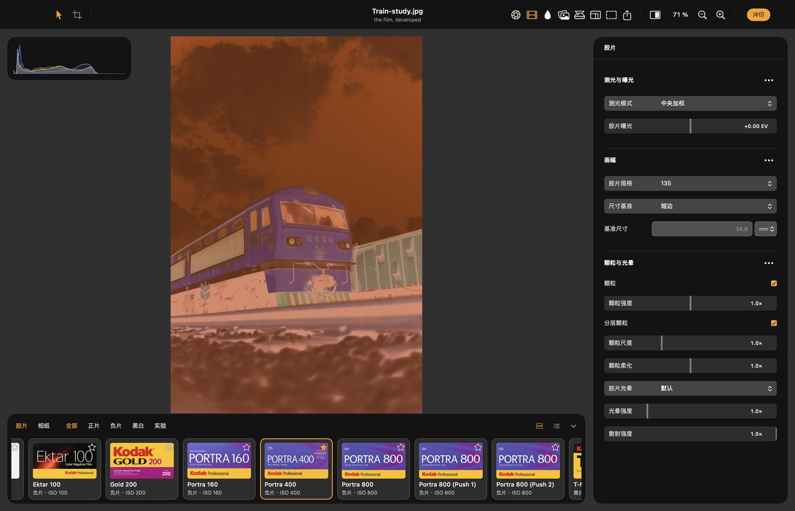
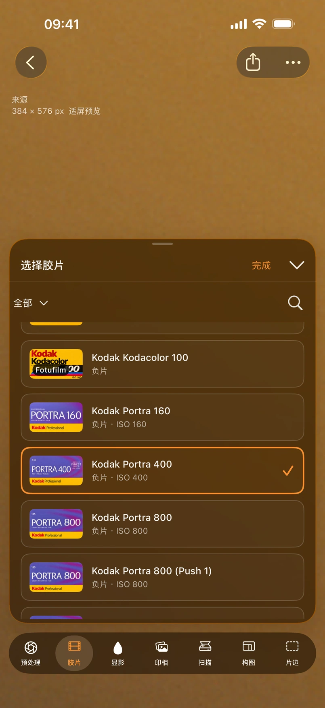
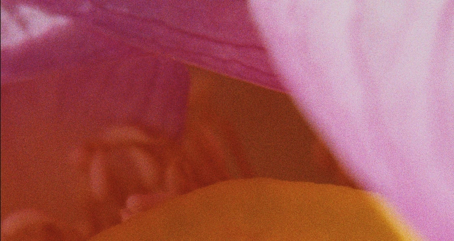

MACOS
The desktop printing bench
Work from folders, soft-proof a print or compose a two-photo half-frame. Lightroom Classic can send a rendered JPEG or TIFF copy.
Lightroom Classic round trip ↗SPECTRAL FILM SIMULATION / 01
Choose a film stock, change the paper, and print the same photograph differently. A free, open-source virtual darkroom for Mac, iPhone and iPad.


01 / NATIVE APPS
From the camera and library on iPhone to folders, printing and output on Mac. One rendering engine, two native workflows.

MACOS
Work from folders, soft-proof a print or compose a two-photo half-frame. Lightroom Classic can send a rendered JPEG or TIFF copy.
Lightroom Classic round trip ↗
IPHONE / IPAD
Shoot or import, rate and flag frames, copy adjustments and export in batches. Originals and per-photo edits stay in the local library.
Mobile guide ↗Controls and output options vary by platform; the app libraries do not sync across devices.
02 / THE MATERIAL LIBRARY
Beyond the standard stocks, the library includes 29 experimental profiles from MUAStudio’s Fotufilm, adapted by Negs and brought into Silverphase. Find them under Experimental in the film picker and try them alongside the standard stocks on the same frame.
03 / THE CONTACT SHEET
Each photo has its own stock, paper and recipe. See the full photographs here; this is not a controlled comparison.
Fujifilm Eterna 500 / Kodak Vision 2383
Fujifilm Pro 160NS / Supra Endura
Fujifilm Reala 100 / Fujifilm Crystal Archive Type II
Ilford HP5 Plus / Ilford Multigrade IV RC
CineStill 400D / Portra Endura
Kodak Vision3 250D / Kodak Vision 2383
THE PAPER STUDY
Both simulated prints come from the same Portra 400 negative. Switch the right-hand image between papers and an unsimulated RAW reference. Look at the whole image, then inspect the petal edges and the yellow center.



Same negative and print exposure, now with Supra Endura’s built-in neutral calibration.
Open the annotated 2560 px comparisonApple’s RAW decode, with no film simulation.
Portra EnduraThe same Portra 400 negative, printed with Portra Endura’s built-in neutral calibration.
Supra EnduraSame negative and print exposure, now with Supra Endura’s built-in neutral calibration.
Method: +0.67 EV from metered film exposure, with the print exposure value held at 0.88. Each paper uses its built-in neutral calibration. Detail crops use the same coordinates in the 4096 px renders.
AFTER DARK, UP CLOSE
In the same 800T night scene, look at the glowing edges of the sign, then the lit pavement. Both details are crops from a 7008 × 4672 render with no added sharpening.
CineStill 800T / Kodak Vision 2383
35 mm · 1× grain · Stock halation enabled


THE PROCESS
Keep the starting image, negative and print separate. When a print changes, you know which stage to return to.
Crop and Film Edge are separate tools. Controls and export options vary by platform.
Read the project documentationSet input exposure, brights and darks, contrast, detail and color. With supported RAW files, match the camera preview brightness as a starting point.
Input exposure · Tone · Midtone detail · Color
Choose a stock and film format, then adjust exposure relative to the film metering baseline. This is separate from input exposure in Prep.
Stock · Format · Metering and exposure
Adjust development at the negative stage before passing the result to color enlargement or scanning.
Negative development
Change the paper, print exposure or filtration. The lotus study holds the negative and print exposure constant to show what changing the paper does.
Paper · Print exposure · Filtration
Set up the scan and output to deliver your image. For external grading on Mac, see the Cineon DI export guide.
Scan · Output · Export

BEYOND THE FRAME
The engine renders this 135 strip’s perforations, edge markings and frame number. They are not layout overlays. The complete plate also includes four covers from the in-app library.
DOWNLOAD
Open a JPEG or an Apple-supported RAW. Make a negative with one stock, then try changing only the paper.
iOS / iPadOS 18+
App StoreTestFlightApple silicon · macOS 15+
Download for MacInstallation guideExplore the source, licenses and releases.
GitHubThe Mac DMG is ad hoc signed and is not Apple-notarized. The iPhone and iPad listing is not offered on the China mainland storefront. See the store for available versions.